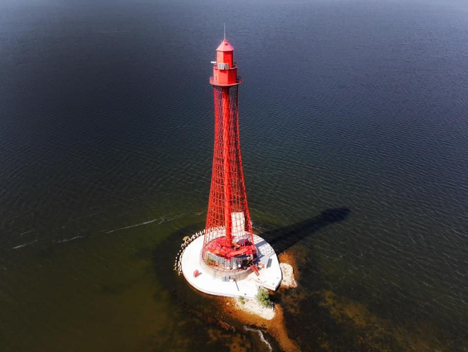
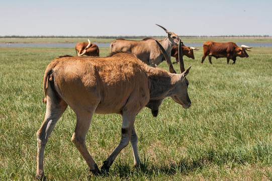
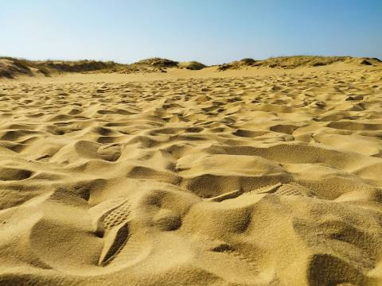
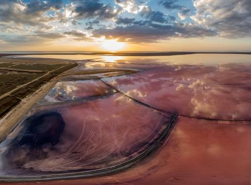

Цікаві факти про місто Херсон
Проспект Ушакова в місті Херсон має унікальну особливість – його не перетинає жодна вулиця. Це не означає, що вулиці не стикаються з проспектом: вулиці беруть свій початок від нього і йдуть в бік сходу або ж заходу.
На вулиці Суворова росли пальми.
У далекому 1957 році в Херсон прибуло 14 вагонів з незвичайними подарунками місту від грузинського народу. Всередині знаходилися такі саджанці субтропічних рослин, як пальми, лимони, кедри, дуби, гліцинії, виноград, кипариси. Через кілька днів всю цю красу розсадили на вулиці Суворова і в центральній частині міста. Чи варто говорити, що рослини занадто теплолюбні для нашого клімату і протрималися лише до першої зими. Після чого були благополучно замінені на платани, які ми можемо спостерігати й донині
Саме на Херсонщині розташовані:
- найдовша піщана коса в світі – Арабатська Стрілка;
- найбільший в Європі безлюдний острів – Джарилгач;
- найбільший піщаний масив в Україні, один з найбільших у Європі – Олешківські піски;
- найбільше в Україні водосховище за обсягом запасів прісної води – Каховське;
- найбільший у світі рукотворний ліс – 100 тис. га;
- понад 450 км морської берегової лінії, 200 км піщаних пляжів морського узбережжя;
- 102 обладнаних морських і 10 річкових пляжів;
Найвищий маяк України – Аджигольський
В області знаходиться найвищий маяк України – Аджигольський (64 м). Це перший у світі маяк легкої конструкції. Унікальність конструкції в тому, що ажурна решітка маяка тримає всю споруду. Прототипом ідеї такого гіперболоїда стала звичайна плетена корзина.
«Асканія-Нова»
Місцеві жителі радять відвідати природний заповідник у Херсонській області – «Асканія-Нова». Славиться він унікальними степами й рідкісними тваринами. Таке диво єдине в Європі. І воно в Україні.
Олешківські піски є найбільшим піщаним масивом у Європі
Oлешківські піски часто називають пустелею, це не зовсім правильно. За температурним режимом та кількістю опадів їх можна швидше віднести до напівпустель. Влітку пісок нагрівається до 70 градусів, і гарячі висхідні потоки, що йдуть від пісків, розгонять дощові хмари. Тому дощів тут менше, аніж в самому Херсоні, який знаходиться по іншу сторону Дніпра. Трапляються тут і піщані бурі, під час яких не видно ані неба, ані сонця.
Рожеве озеро
Рожеве озеро (Генічеське) — місце з неймовірними червоно-рожевими марсіанськими пейзажами, що знаходиться біля самого початку Арабатської стрілки у селі Приозерне. Також біля озера знаходяться залишки зруйнованого солезаводу. Фантастичний колір озеро має завдяки мікроводорості Dunaliella salina, що здатна жити у дуже солоній воді. Вона виробляє каротиноїди, які не лише надають воді червоно-рожевих відтінків, а й мають корисні властивості.Порада — беріть з собою великий запас прісної води, щоб мати можливість змити сіль та мул зі шкіри. "Рожевість" озера достатньо сильно залежить від температури повітря, освітлення і кута погляду, тому іноді воно може виглядати звичайним озером, а іноді яскравість Сиваша вас може сильно здивувати.
